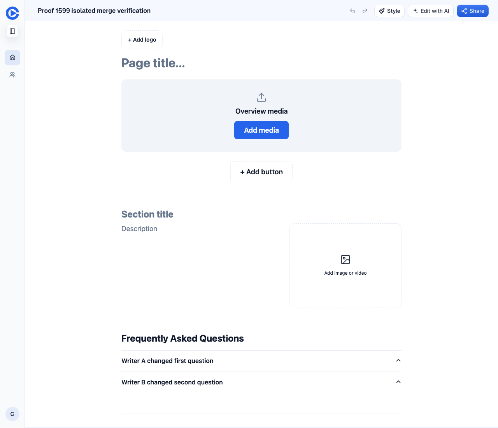
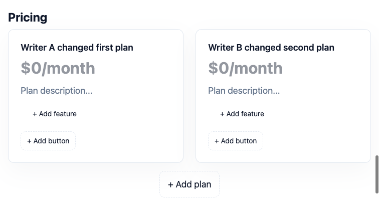
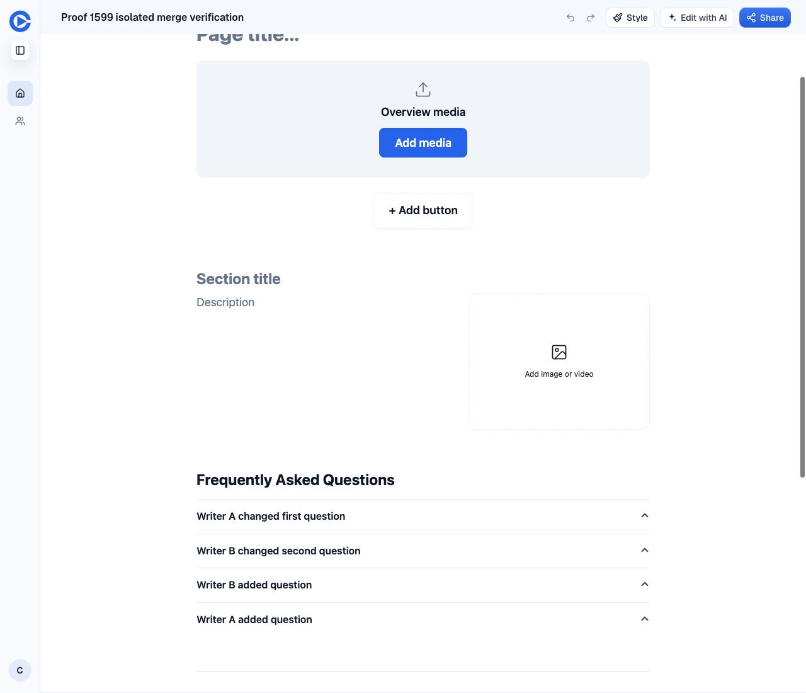
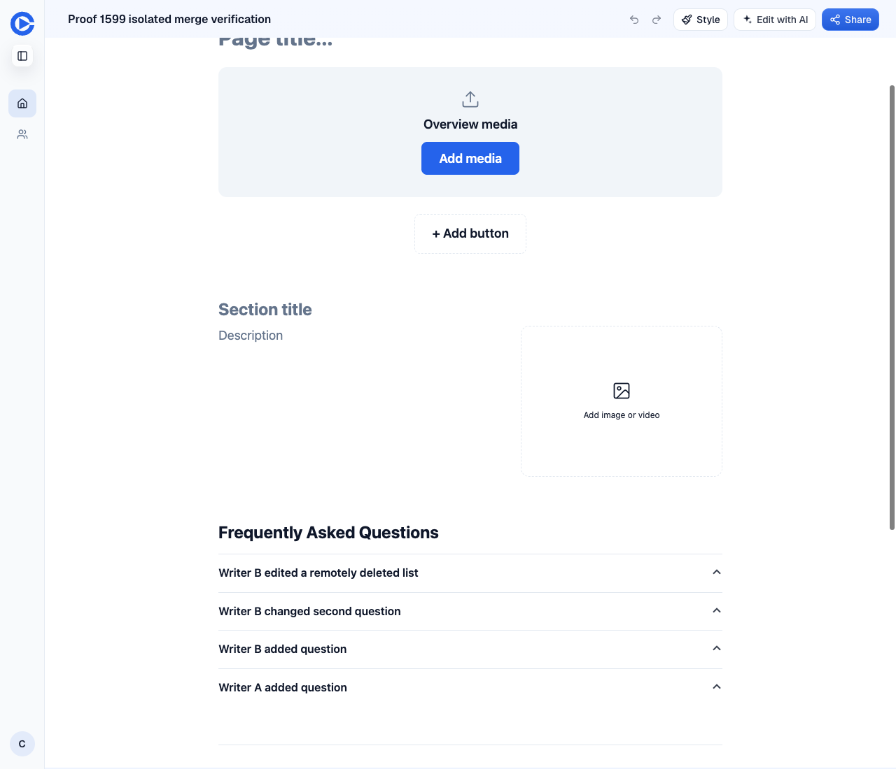

Independent preview verification on 1 November 2026. Head d2ed1ad809b2e6146725a6e9ed8596e635010b7b. Routing auto. William has not signed off and nothing was merged.
PR #1599 · Issue #1369 · PR preview
| Check | Result | Evidence |
|---|---|---|
| FAQ two writers | PASS | Before loses A. After retains A and B after reload. |
| Pricing two writers | PASS | Both plan titles persist after reload. |
| FAQ additions on each side | PASS | Both additions persist, alongside both existing rows. |
| Whole-list deletion question | NOTE | Deleting the FAQ section in A and editing its first row in stale B restores all four rows. This decision remains open for William. |
| Red to green | PASS | FAQ case fails at merge base 66af49adf5da8ca3704ea733b6277b4aa3966766 and passes on head. |
| Head regression suites | PASS | merge-drafts.test.ts and canvas-conflict-drafts.test.tsx. 2 files passed, 339 tests passed. |
| Independent evidence audit | PASS | Screenshots inspected against saved text and response logs. |
| Cleanup | PASS | Both isolated mock pages deleted. No direct D1 writes. No production or staging writes. |
Two separate browser contexts signed in as the same mock Pro account load the same revision. A edits row one and saves. B edits row two from its stale draft and saves. B gets HTTP 409 stale_revision, merges, retries successfully, then reloads. Read pages_get to confirm stored values.
Before uses PR #1590, main plus a CSS token change, at 2ea76ccb7c46a591359530a8e879272d6eb5869e with base 66af49adf5da8ca3704ea733b6277b4aa3966766. It needs mock writes, so staging was not used.
https://pr-1590.clarity-video.workers.dev
[ "First original question", "Writer B changed second question" ]
https://pr-1599.clarity-video.workers.dev
[ "Writer A changed first question", "Writer B changed second question" ]

[ "Writer A changed first plan", "Writer B changed second plan" ]

[ "Writer A changed first question", "Writer B changed second question", "Writer B added question", "Writer A added question" ]

[ "Writer B edited a remotely deleted list", "Writer B changed second question", "Writer B added question", "Writer A added question" ]

RUN v4.1.11 /Users/williamlarsten/.clarity-scratch/inbox-burndown/ship-2026-11-01/pr-1599/wt/editor
❯ tests/merge-drafts.test.ts (67 tests | 1 failed | 66 skipped) 7ms
× keeps edits to different FAQ rows from both writers 6ms
⎯⎯⎯⎯⎯⎯⎯ Failed Tests 1 ⎯⎯⎯⎯⎯⎯⎯
FAIL tests/merge-drafts.test.ts > mergeDrafts > keeps edits to different FAQ rows from both writers
AssertionError: expected [ Array(2) ] to deeply equal [ Array(2) ]
- Expected
+ Received
@@ -4,11 +4,11 @@
"id": "a",
"question": "First?",
"seq_no": "1",
},
{
- "answer": "Remote answer",
+ "answer": "Second answer",
"id": "b",
"question": "Second?",
"seq_no": "2",
},
]
❯ tests/merge-drafts.test.ts:248:62
246| const merged = mergeDrafts({ base, local, remote }).blocks[0];
247|
248| expect(merged.kind === 'faq' && merged.fields.questions).toEqual([
| ^
249| { id: 'a', question: 'First?', answer: 'Local answer', seq_no: '…
250| { id: 'b', question: 'Second?', answer: 'Remote answer', seq_no:…
⎯⎯⎯⎯⎯⎯⎯⎯⎯⎯⎯⎯⎯⎯⎯⎯⎯⎯⎯⎯⎯⎯⎯⎯[1/1]⎯
Test Files 1 failed (1)
Tests 1 failed | 66 skipped (67)
Start at 15:45:08
Duration 236ms (transform 131ms, setup 11ms, import 154ms, tests 7ms, environment 0ms)
undefined
/Users/williamlarsten/.clarity-scratch/inbox-burndown/ship-2026-11-01/pr-1599/wt/editor:
ERR_PNPM_RECURSIVE_EXEC_FIRST_FAIL Command failed with exit code 1: vitest run tests/merge-drafts.test.ts -t keeps edits to different FAQ rows from both writers
RUN v4.1.11 /Users/williamlarsten/.clarity-scratch/inbox-burndown/ship-2026-11-01/pr-1599/wt/editor
Test Files 2 passed (2)
Tests 339 passed (339)
Start at 15:44:54
Duration 7.75s (transform 455ms, setup 68ms, import 770ms, tests 6.88s, environment 403ms)
No pageerror events were recorded in the two-context runs. Expected 409 stale_revision responses were followed by successful saves in every conflict case. No other save failures were observed. Waved through none. Console warnings outside these runs were not used as evidence.
{
"before": [
{
"who": "A",
"status": 200,
"revision": 2
},
{
"who": "B",
"status": 409,
"revision": 2,
"code": "stale_revision"
},
{
"who": "B",
"status": 200,
"revision": 3
}
],
"after": [
{
"who": "A",
"status": 200,
"revision": 5
},
{
"who": "B",
"status": 409,
"revision": 5,
"code": "stale_revision"
},
{
"who": "B",
"status": 200,
"revision": 6
},
{
"who": "A",
"status": 200,
"revision": 7
},
{
"who": "B",
"status": 409,
"revision": 7,
"code": "stale_revision"
},
{
"who": "B",
"status": 200,
"revision": 8
},
{
"who": "A",
"status": 200,
"revision": 9
},
{
"who": "B",
"status": 409,
"revision": 9,
"code": "stale_revision"
},
{
"who": "B",
"status": 200,
"revision": 10
},
{
"who": "A",
"status": 200,
"revision": 11
},
{
"who": "B",
"status": 409,
"revision": 11,
"code": "stale_revision"
},
{
"who": "B",
"status": 200,
"revision": 12
}
]
}
Only isolated mock pages owned by the seeded Pro account were written through app APIs. No direct database commands were needed.